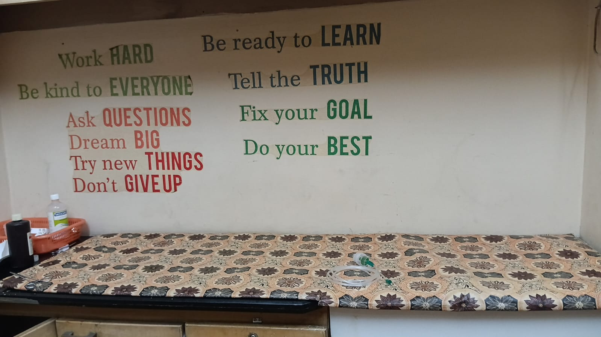
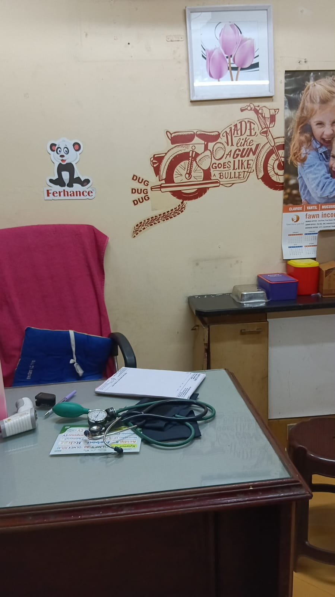
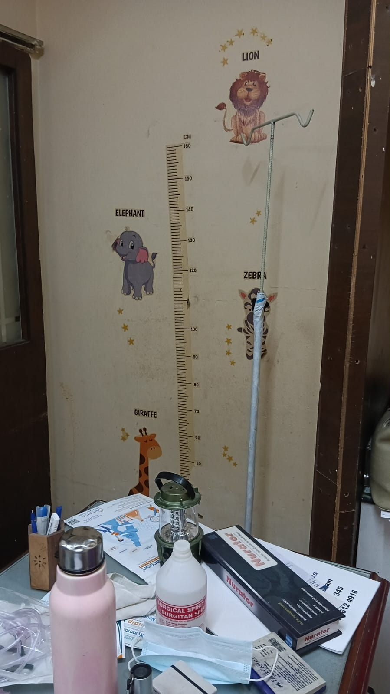
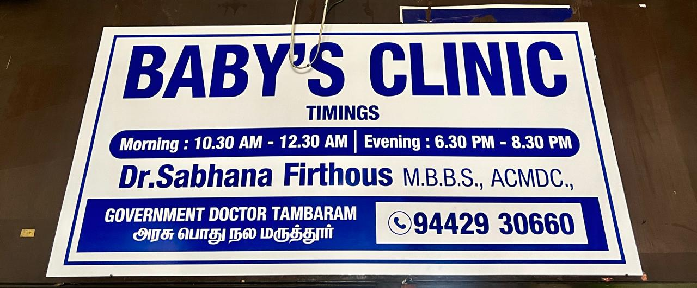
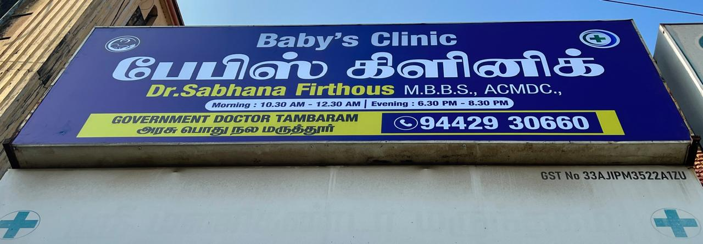

Morning OP
Primary care in West Tambaram
Baby’s Clinic, West Tambaram
Dr. Sabhana Firthous, MBBS
Accessible general consultation, preventive care, ongoing health management and eligible certification services for individuals and families.
OP consultations
Monday–Saturday
10:30 AM–12:30 PM
6:30 PM–8:30 PM
Sunday
10:30 AM–12:00 PM
Call ahead to confirm availability.
Visit the clinic
Easy to find.
Ready to help.
Baby’s Clinic
Dr. Sabhana Firthous, MBBS
No. 54A, Mudichur Road, West Tambaram
Near Pattammal Gas Agency
Chengalpattu District, Tamil Nadu
Appointment number
+91 76670 17100
Open in Google Maps
Plan your visit
OP timings
Two convenient consultation windows on weekdays and Saturdays, with a Sunday morning session.
Evening OP
Morning OP
Services available
Doctor services in West Tambaram: general OPD, fever, immunisation and more
General medical care and focused support for common health needs, delivered with clarity and compassion.
General OPD Consultation
Assessment and guidance for common health concerns and ongoing care needs.
Fever Evaluation and Treatment
Clinical assessment, appropriate treatment and advice on follow-up or referral.
Immunisation Services
Immunisation support according to eligibility, clinical guidance and availability.
Gazetted Officer Attestation
Eligible document verification and attestation after reviewing the originals.
Copper-T (IUCD) Services
Consultation, insertion and removal following appropriate clinical evaluation.
Diabetes Management
Screening, monitoring, treatment guidance and continuing lifestyle support.
Hypertension Management
Blood-pressure screening, monitoring and ongoing management support.
Thyroid Disorder Management
Evaluation, monitoring and management based on clinical findings and investigations.
Visit us
Inside Baby’s Clinic, Mudichur Road
A welcoming space dedicated to your health and well-being.





Common questions
Baby’s Clinic FAQs
Timings, services and visiting information for patients in West Tambaram and nearby areas.
What are Baby’s Clinic OP timings in West Tambaram?
Monday to Saturday: 10:30 AM to 12:30 PM and 6:30 PM to 8:30 PM. Sunday: 10:30 AM to 12:00 PM. Please call +91 76670 17100 to confirm availability before visiting.
Where is Baby’s Clinic located?
Baby’s Clinic is at No. 54A, Mudichur Road, West Tambaram, near Pattammal Gas Agency, Chengalpattu District, Tamil Nadu. It serves patients from West Tambaram, East Tambaram, Tambaram Sanatorium, Selaiyur, Chitlapakkam, Chromepet, Perungalathur and Mudichur.
Is there a doctor with evening and Sunday OP in West Tambaram?
Yes. Dr. Sabhana Firthous, MBBS, sees patients at Baby’s Clinic on Monday to Saturday evenings from 6:30 PM to 8:30 PM and on Sunday mornings from 10:30 AM to 12:00 PM, in addition to morning OP.
What medical services does Baby’s Clinic offer?
General OPD consultation, fever evaluation and treatment, immunisation, diabetes, hypertension (blood pressure) and thyroid screening and management, Copper-T (IUCD) insertion and removal, and Government and Gazetted Officer attestation.
Can I get fever treatment at Baby’s Clinic?
Yes. Fever evaluation and treatment are available during OP hours, including clinical assessment, appropriate treatment and advice on follow-up or referral. In an emergency, go to the nearest hospital.
Does Baby’s Clinic provide vaccination and immunisation services?
Immunisation support is available according to eligibility, clinical guidance and vaccine availability. Call before visiting to confirm the vaccine you need.
Is Copper-T (IUCD) insertion and removal available in West Tambaram?
Yes. Copper-T consultation, insertion and removal are offered after appropriate clinical evaluation at Baby’s Clinic.
Can I get diabetes, blood pressure or thyroid care at Baby’s Clinic?
Yes. The clinic offers screening, monitoring, treatment guidance and ongoing management for diabetes, hypertension and thyroid disorders, based on clinical findings and investigations.
Is Gazetted Officer attestation available at Baby’s Clinic?
Yes. Eligible documents can be verified and attested after checking the originals during clinic hours. Bring original photo ID, the original documents and clear photocopies. Acceptance is decided by the receiving organization.
How do I book an appointment at Baby’s Clinic?
Call or message +91 76670 17100 on WhatsApp, or use the Book appointment button on this page. Do not use the website or WhatsApp for emergencies.
Appointments
Plan your visit to Baby’s Clinic
Call before visiting to confirm the current consultation schedule and service availability.